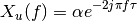
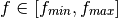

%pylab inline
Populating the interactive namespace from numpy and matplotlib
The Bsignal Class¶
The Bsignal class is a container for a signal with a base. It can handle time domain or frequency domain signal.
from pylayers.signal.bsignal import *
from matplotlib.pyplot import *
We construct an impulse signal normalized in energy.
E=EnImpulse(fe=40)
E.plot(typ='v')
(<matplotlib.figure.Figure at 0x7f64140c6d90>,
array([[<matplotlib.axes.AxesSubplot object at 0x7f64140d33d0>]], dtype=object))
E.energy()
40.000003097054716
The Fourier transform of this signal has the hermitian Symmetry.
F = E.fft()
F.plot(typ='m')
(<matplotlib.figure.Figure at 0x7f6414023110>,
array([[<matplotlib.axes.AxesSubplot object at 0x7f641402e210>]], dtype=object))
F.y[0]
(0.00029728997658457938+0j)
We then extract the non redundant part of the signal with the ft method
G=E.ft()
GH=G.symHz(100,scale='extract')
print GH.y[1]
print GH.y[-1]
(-0.0014441784194-4.88037298122e-05j)
(-0.0014441784194+4.88037298122e-05j)
ip=F.ifft()
ip2=GH.ifft()
f,a=E.plot(typ='v',labels=['original'])
f,a=ip.plot(typ='v',fig=f,ax=a[0][0],labels=['no zero padding'])
f,a=ip2.plot(typ='v',fig=f,ax=a[0][0],labels=['zero padding'])
title('extract mode')
<matplotlib.text.Text at 0x7f6413f0c550>
ip.energy()
40.000003097054773
ip2.energy()
401.35111446263471
Y=E.esd()
FHsignal for in CIR mode¶
We create a Fusignal which corresponds to the signal


f = np.arange(2,10,0.01)
y = 2*np.ones(len(f))*np.exp(-2*1j*np.pi*f*3)
N = len(f)
Hu = FUsignal(f,y)
print N
800
Hu.plot(typ='m')
(<matplotlib.figure.Figure at 0x7f6413f8da50>,
array([[<matplotlib.axes.AxesSubplot object at 0x7f6413f80a90>]], dtype=object))
hu = Hu.ifft()
The inverse Fourier transform allows to recover perfectly the amplitude
 and the delay
and the delay  of the channel
of the channel
hu.plot(typ='m')
(<matplotlib.figure.Figure at 0x7f6413be6fd0>,
array([[<matplotlib.axes.AxesSubplot object at 0x7f6413c40390>]], dtype=object))
real=np.imag(hu.y)
u = np.where(hu.y==max(hu.y))[0]
tau = hu.x[u]
alpha = abs(hu.y[u])
print alpha,tau
[ 2.] [ 3.00375469]
H = Hu.symHz(100,scale='cir')
H.plot(typ='m')
(<matplotlib.figure.Figure at 0x7f6413b7fad0>,
array([[<matplotlib.axes.AxesSubplot object at 0x7f6413c1e110>]], dtype=object))
h = H.ifft()
h.plot(typ='v')
(<matplotlib.figure.Figure at 0x7f6413b14710>,
array([[<matplotlib.axes.AxesSubplot object at 0x7f6413b14a10>]], dtype=object))
real=np.imag(h.y)
u = np.where(h.y==max(h.y))[0]
tau = h.x[u]
alpha = abs(h.y[u])
print alpha,tau
[ 1.97995425] [-46.97864607]
fft.ifft(H.y)
array([ -1.93565190e-15 -1.70240923e-19j,
2.62295322e-04 -3.27871407e-19j,
8.73458329e-04 -4.09839258e-20j, ...,
-1.06670199e-04 +2.90350482e-19j,
-8.69428086e-04 -1.58117458e-18j, -5.31550980e-05 -2.71727936e-20j])
print H.y[203]
print H.y[-203]
len(H.y)
(0.116169256529-0.0459946624208j)
(0.116169256529+0.0459946624208j)
2201
Y=h.fft()
Y.plot(typ='m')
(<matplotlib.figure.Figure at 0x7f6413963bd0>,
array([[<matplotlib.axes.AxesSubplot object at 0x7f64139cb8d0>]], dtype=object))